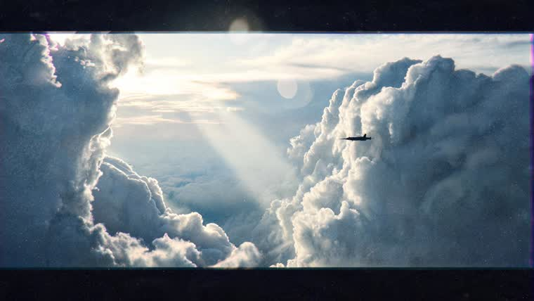
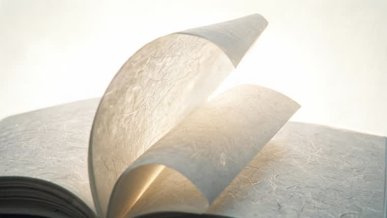
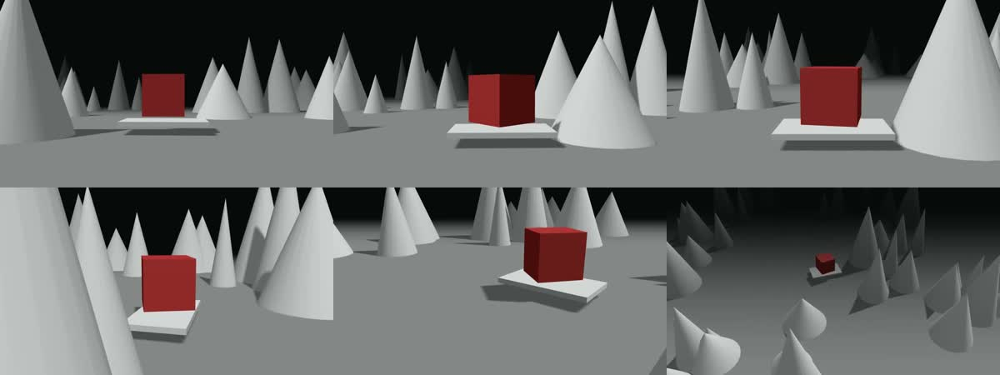

把「想拍什么」变成一条 Seedance 2.5 能准确执行的指令。四条产线：提示词、白模、参考图、照片反解。
这一页不讲怎么用（那是 SKILL.md 的事），讲的是这些规则凭什么这么定 —— 每一条后面都挂着实测证据。
网上的 xxx-prompt-guide 绝大多数是二手转述加模板堆砌。这套规则只采信四家模型团队自己写的东西，以及他们官方演示物料里配着成片的 prompt 原文。
口径冲突时以 Seedance 2.5 / 2.0 为准 —— 本 skill 服务的是 Seedance 生成，别家的最佳实践未必迁移得过来（见铁律五的实例）。
「电影感」只能被模型理解成「好看」。要写《敦刻尔克》、IMAX 65mm、Kodak Vision3、体积光柱、侧逆光。
原理：2026 年的模型是在海量专业摄影数据上训练的，它们对技术术语的响应远好于华丽形容词。

高空云海俯瞰，积云层层堆叠像山脉，夕阳把云顶染成暖金……光线通透有体积感，电影感实拍质感，胶片颗粒，16:9 电影画幅
IMAX 65mm 航拍，摄影参照《敦刻尔克》与《壮志凌云独行侠》的空战摄影。……一架战斗机的黑色小剪影正贴着右侧云壁飞行，与云壁形成悬殊的尺度对比。低角度侧逆光从云缝间射出，形成数道清晰的体积光柱穿透云谷……变形宽银幕镜头，Kodak Vision3 胶片颗粒
IMAX 65mm 航拍实景摄影……实拍照片质感不是CG渲染……画面内容完整填满整个16:9画幅，不要黑边，不要信箱式黑框，不要边框装饰

漏掉「不继承」，模型会把参考里的一切都端过来。这是所有规律里最重要的一条。
参考 @白模1 的运镜、镜头节奏、景别变化、主体轨迹和镜头调度。参考 @图片2 的角色外形、场景、材质、光照、色彩和童话氛围，将白模渲染为梦幻温暖、儿童幻想感、3D 动画短片。
—— 字节 Seed 官方演示物料
注意它把结构和质感完全分开：运动信息从白模来，视觉信息从图片来。这也是本 skill 三条产线的分工依据 —— 白模管构图机位，参考图管材质光线，两者不许越界。

选 HTML 而不是 Blender 的理由不是省事，是确定性：hyperframes 是单一 paused timeline + seek-safe，同样的代码永远出同样的帧。白模的时间轴因此能和 prompt 里的 0-4s: 严格对齐 —— 这是白模驱动能成立的前提。
官方从不写「不要低质量」。实际写法全是在排除某一类具体错误：
| 官方原句 | 排除的是 |
|---|---|
| 避免白模塑料感 | 材质错误 |
| 不做教学拆解 / 不出现维修说明式镜头 | 叙事品类错误 |
| 无箭头标签 | 图形元素错误 |
| 不得突然消失 | 物理连续性错误 |
| 无字幕、无音乐 / 无BGM | 音轨错误 |
Veo 官方对这条有一致的表述：描述你想排除的情景，而不是说「不要什么」。官方原例是写 a desolate landscape with no buildings or roads，而不是 no man-made structures。两家独立得出同一结论，可信度比单一来源高。
四家官方口径完全一致 —— 这是罕见的：
仍有改进空间，特别是复杂运动的物理合理性，以及多主体互动场景的稳定性。
—— Seedance 2.5 官方博客结尾，自己承认
当前视频大模型对数字不敏感，难以保持数量一致性，例如「沙滩上10只小狗」。现阶段也难以生成复杂物理运动，如球的弹跳、高空抛物的轨迹。
—— 可灵 Kling 官方提示词指南
设计分镜时直接绕开这三类，比反复抽卡便宜得多。
四家官方文档之间有三处真实冲突（对白该不该单开区块、prompt 该长该短、公式该不该守）。这就是网上教程互相矛盾的根源 —— 它们抄的是不同的家。
最典型的反面实例：Sora 2 官方把 Anamorphic 2.0x lens 列为「强 prompt」的范例。但在 Seedream 生成参考图时写 anamorphic，模型会把宽银幕的信箱黑边一起画进画面（上面 V2 那张就是）。
别家的最佳实践，未必迁移得过来。
不是从设计稿抄的，也不是想出来的。2026-08-14 有两条 prompt 就是照设计稿写的：一条承诺「环绕收到 2 米」，白模实际只到 3.4 米；另一条承诺「降回 12 米」，而真降下去会把队形的外顶点拍出画。提示词和白模一旦分头演化，一定会分叉。
现在这件事交给工具：make_prompt.mjs 读同一份 scene.json，把景别、机位距离、俯角、环绕角度全部量出来再写进 prompt。改了白模就重跑它。
2026-08-12 那批白模：五个全渲出来了、lint 全绿、时长全对 —— 抽帧一看，五个里有五个运镜是坏的。相机和主体重叠在同一点、绕的中心不是主体的中心导致主体被裁出画、队形半径超出机位覆盖永远拍不全、前景道具落在相机背后。
这些坑没有一个是 lint 能报出来的，因为它们全是纯几何问题。probe.mjs 把其中可判定的部分做成了渲染前的自动检查，但渲完仍然必须抽帧看 —— 体检查得了几何，查不了好不好看。
npx hyperframes render@图片1，空间与质感天然一致@白模1 给运镜与调度，@图片N 给材质与光线，两边各自写清「不继承什么」，再叠上时间戳分段与负面约束。
典型顺序：澄清需求 → 给用户看镜头表 → B 做白模锁运镜 → C 做参考图锁质感 → A 把两者绑成一条 prompt。
产线不必全跑。只要提示词就跑 A；运镜复杂就加 B；质感要求高就加 C；用户给了照片就用 D 顶替 B+C 的起点。
第一步永远是澄清，不是开渲。 只有三件事必须问用户：多长、发在哪（画幅）、一镜到底还是切镜头；其余的先推断再摊给他否决。 摊完假设先给一张 3-5 行的镜头表 —— 文字改一行只要一秒，白模建完再改是几分钟。2026-08-15 那次三条片子全部返工，根因就是跳过了这一步。
产线 B 现在不写三维代码，写一份 scene.json：probe.mjs 拿它做渲染前体检，build.mjs 拿它生成可渲染工程，make_prompt.mjs 拿它量运镜、出提示词草稿。
三个工具共用同一份数据，这是提示词和白模不可能对不上的原因。
| 症状 | 八成是哪里的问题 | 去哪改 |
|---|---|---|
| 画面像图库壁纸 | prompt 里全是形容词，没有可指认的锚点 | references/reference-image.md 六要素逐条对 |
| 出来是 CG 概念图不是实拍 | 漏了「实拍照片质感不是CG渲染不是概念插画」 | 同上 · 固定尾巴 |
| 画面带黑边或胶片框 | 写了「变形宽银幕 / anamorphic」 | 删掉它，并补「填满画幅不要黑边」 |
| 写了「巨大」但看不出大 | 缺尺度参照物 | 加一个渺小的人影 / 载具剪影 |
| 运镜不听话、时间对不上 | 只用文字描述运镜，没有白模 | references/whitemodel.md 起白模 |
| 参考素材多了反而更糊 | 每张图各带构图倾向，把镜头拽向多个方向 | 参考图只声明材质光线，构图交给白模 |
| 主体在镜头间跑偏 / 换脸 | 没有逐素材的定向声明 | references/prompt-spec.md 定向引用一节 |
| 素材上十几张就写崩 | 逐张说明，没有分组 | 按功能分组打包，只有人物逐个点名 |
| 成片里主体在某一段整个消失 | 白模里它太小了 —— 占画高不到 10%，位移又被缓动吃掉 | 拉近机位或给那段真实位移。probe.mjs 会提前报 |
| 白模画面只剩一条边、主体被挡死 | 环绕半径太大，相机绕进墙里了 | 收小半径或抬高机位。probe.mjs 会提前报 |
| 白模人物像在倒着走 | 人物朝向套用了机位的角度公式，两者零点差 180° | 朝向交给引擎从路径切线算，别手填角度 |
| 成片里出现莫名其妙的色块人群 | 白模主体的颜色渗进成片了 | 除主角外一律灰白系，主角只给一个饱和色 |
| 白模首帧是坏的 | 渲染管线的首帧未结算 bug | 量 f0→f1 ÷ f1→f2，大于 2 就做帧手术丢首帧补末帧，不用重渲 |
| 渲染报 zero duration | 根元素缺 data-duration | three 适配器不做时长推断，必须显式给 |
| 每次渲染白等 45 秒 | 根元素缺 data-no-timeline | 加上它，跳过 GSAP 轮询 |
| check 报 sweep_static | 误报。它测 DOM 几何变化，白模动画在 canvas 像素里 | 以 render 出的 mp4 为准，别加无意义 DOM 动画 |
模型迭代会让部分规则失效，尤其是铁律五那三条限制 —— 它们是当前的能力边界，不是永久事实。Seedance 3.0 出来时要重测一遍。
参考的三家官方文档已经在老化：Veo 3.1 那份发布于 2025-10，Sora 2 那份对应的应用已在 2026-04 关停，Kling 那份还停在 5-10 秒时代。它们的方法论仍然有效，参数和限制请勿直接引用。
怎么更新：新模型发布时，去它的官方博客与官方演示物料里找配着成片的 prompt 原文 —— 那是唯一可靠的一手来源。把新原文归档下来，再回来修订这几条铁律。